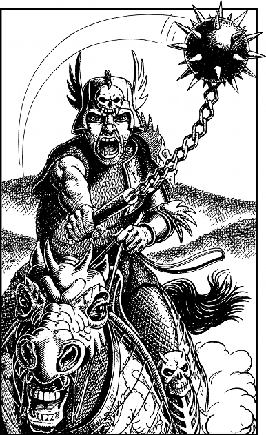

80
Your blow catches the enemy rider in the throat, at a weak point in his armour where the base of his helmet joins the top of his breastplate. Mortally wounded, he fights desperately to hang on to his reins as he falls from the saddle, but in so doing, he unbalances his warhorse and brings the creature crashing down on top of him. You press on through the resulting gap, and glance back to see Delissa following closely on your heels. She is an expert horsewoman and you are greatly impressed by her courage and skill. As you break free from the converging horsemen, you hear a crash of metal and the anguished cry of men and horses: the two units of Sinistrari have collided with calamitous effect. Most of the riders have been unseated, and several have perished beneath the crushing weight of their armoured horses. Only one rider appears to have survived the collision unscathed and he immediately gives chase. As you gallop towards the plateau, you glance back repeatedly at your solitary pursuer and you notice that he is stripping off pieces of his armour to lighten his horse’s burden. In so doing he is able to keep pace with your lighter mounts.
On reaching the plateau, you see a range of hills in the distance and Delissa points towards a pinnacle of rock that is shaped like a church spire.
‘Xaitar’s Rock!’ she cries, identifying the place for your rendezvous with Guildmaster Banedon. You look back once more and this time you are shocked to see that the Sinistrari rider is fast closing the gap. You realize that he will reach you before you are able to arrive at Xaitar’s Rock, and so you signal to Delissa to ride on ahead.
‘Go on!’ you shout. ‘I’ll join you there!’ As she gallops past, you bring your horse around to face your pursuer, and you raise your Kai Weapon in readiness to attack. Then you urge your horse forwards and race headlong towards your enemy. As you close to within 20 yards, you see him whirling his spiked ball and chain around his head as he gets ready to strike you down.

Sinistrari Captain (unarmoured): COMBAT SKILL 48 ENDURANCE 30
Fight this combat in the normal way, but for one round only.
If you inflict a higher or equal ENDURANCE points loss upon your enemy in this single round of combat, turn to 64.
If you suffer a higher ENDURANCE points loss than your enemy in this single round of combat, turn to 111.